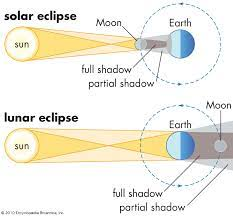

हैलो मैं जेनिल पंचानी और आज मेरे साथ एक सर हैं जो कई सालों से संस्कृत पढ़ा रहे हैं। अनिल सर...
सर के योगदान से यह वेबसाइट भारत के गौरवशाली नागरिकों के लिए सूर्य और चंद्र ग्रहण के ज्ञान को साझा करने के लिए बनाई गई है।
सूर्य ग्रहण तब होता है जब चंद्रमा के बीच से गुजरता है
पृथ्वी और सूर्य, छाया के एक गतिशील क्षेत्र को छोड़कर
पृथ्वी की सतह पर। चंद्र ग्रहण तब होता है जब पृथ्वी
सूर्य और चंद्रमा के बीच से गुजरता है, एक छाया कास्टिंग
चांद पर। ...चाहे ग्रहण पूर्ण हो या वलयाकार
इन तीन वस्तुओं के बीच की दूरी पर निर्भर करता है।
